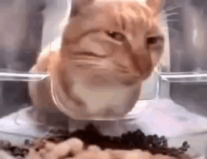

Mr. Fresh was a stray cat who roamed the streets with a sense of independence and resilience. Despite facing the challenges of life on the streets, he maintained a dignified demeanor and a gentle spirit.
With his fur weathered by the elements and a slight limp in his step, Mr. Fresh may not have looked like much to some, but to those who took the time to get to know him, he was a true gem. He had a way of captivating hearts with his soulful eyes and quiet presence.
Despite his tough exterior, Mr. Fresh had a soft spot for kindness. He would often be found lounging in the sun outside the local café, accepting scratches and scraps from passersby with gratitude. He may not have had a permanent home, but he found comfort and companionship in the small acts of kindness from those around him.
Mr. Fresh's days were filled with simple pleasures: basking in the warmth of the sun, exploring hidden nooks and crannies in search of treasures, and finding solace in the quiet moments of the night. Though his life may have been unconventional, he found beauty and joy in the little things.
To the community, Mr. Fresh was more than just a stray cat; he was a symbol of resilience and hope. His presence reminded them to cherish the moments of connection and to always extend a hand—or a can of tuna—to those in need.
In the end, Mr. Fresh's story may have been humble, but it was filled with moments of warmth, kindness, and love. And though he may have been just a stray cat to some, to those who knew him, he was a beloved friend and a cherished member of the community.
Animal: Cat
color: Orange and white
Cat Name: Mr. Fresh
Nickname: None
